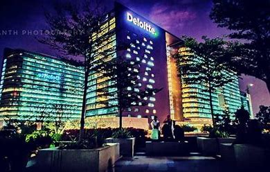

Deloitte Touche Tohmatsu Limited commonly referred to as Deloitte, is an international professional services network headquartered in London, England. Deloitte is the largest professional services network by revenue and number of professionals in the world and is considered one of the Big Four accounting firms along with EY (Ernest & Young), KPMG and PricewaterhouseCoopers (PWC).
The firm was founded by William Welch Deloitte in London in 1845 and expanded into the United States in 1890. It merged with Haskins & Sells to form Deloitte Haskins & Sells in 1972 and with Touche Ross in the US to form Deloitte & Touche in 1989. In 1993, the international firm was renamed Deloitte Touche Tohmatsu, later abbreviated to Deloitte. In 2002, Arthur Andersen's practice in the UK as well as several of that firm's practices in Europe and North and South America agreed to merge with Deloitte. Subsequent acquisitions have included Monitor Group, a large strategy consulting business, in January 2013. The international firm is a UK private company, limited by guarantee, supported by a network of independent legal entities.
Deloitte provides audit, consulting, financial advisory, risk advisory, tax, and legal services with approximately 415,000 professionals globally. In FY 2021, the network earned revenues of US$50.2 billion in aggregate. As of 2020, Deloitte is the third-largest privately-owned company in the United States, according to Forbes. The firm has sponsored a number of activities and events including the 2012 Summer Olympics.
Controversies involving the firm, in addition to litigation surrounding a few of its audits, have included its involvement in a "potentially misleading" report on illicit tobacco trading in Australia, the fact that it suffered a major cyber-attack which breached client confidentiality as well as exposing extensive employee information in September 2017, its role as internal auditor of the insolvent contractor Carillion and its role as external auditor of Autonomy which was accused of "accounting improprieties" that contributed to an £8.8 billion write-down of value following its acquisition by Hewlett-Packard in 2011.

Deloitte Office, Hyderabad.
Deloitte member firms offer services in the following functions, with country-specific variations on their legal implementation (i.e., all operating within a single company or through separate legal entities operating as subsidiaries of an umbrella legal entity for the country).
Audit provides the organization's traditional accounting and audit services, as well as internal auditing, IT control assurance and Media & Advertising Assurance. Investors in Guangdong Kelon Electrical Holdings Company Limited have claimed that there was a failure to alert them to the company's poor financial position.
Consulting assists clients by providing services in the offering areas of Strategy, Analytics and M&A, Customer and Marketing, Core Business Operations, Human Capital, and Enterprise Technology and Performance. Consulting is Deloitte's largest business, bringing over 40% of total revenues in 2021.
Financial advisory provides corporate finance services to clients, including dispute, personal and commercial bankruptcy, forensics, e-discovery, document review, advisory, mergers & acquisitions, capital projects consulting and valuation services.
Risk advisory provides offerings in enterprise risk management, information security and privacy, data quality and integrity, strategic & reputation risk, regulatory risk, project risk and cyber risk, and business continuity management and sustainability.
Tax and legal helps clients increase their net asset value, undertake the transfer pricing and international tax activities of multinational companies, minimize their tax liabilities, implement tax computer systems, and provides advisory of tax implications of various business decisions.
GovLab is the internal think tank of Deloitte Consulting LLP's Federal Government consulting practice, focused on innovation and government reform. Created in 2010, GovLab is based at New York University in New York, New York, and typically undertakes eight or nine research topics per year, focusing on how future trends, technologies, and business models will affect government.
Back to top